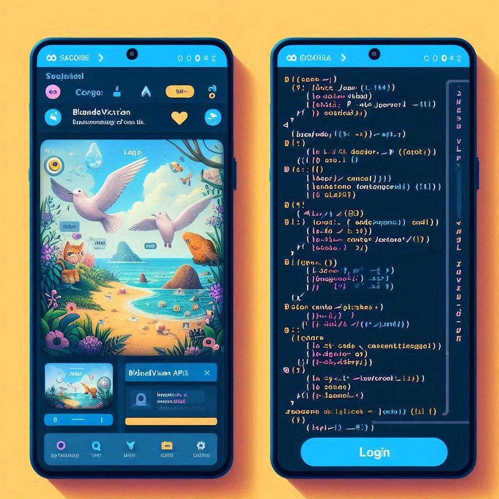
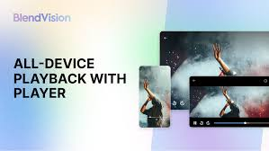
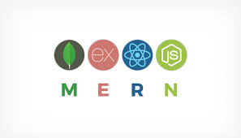
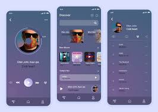
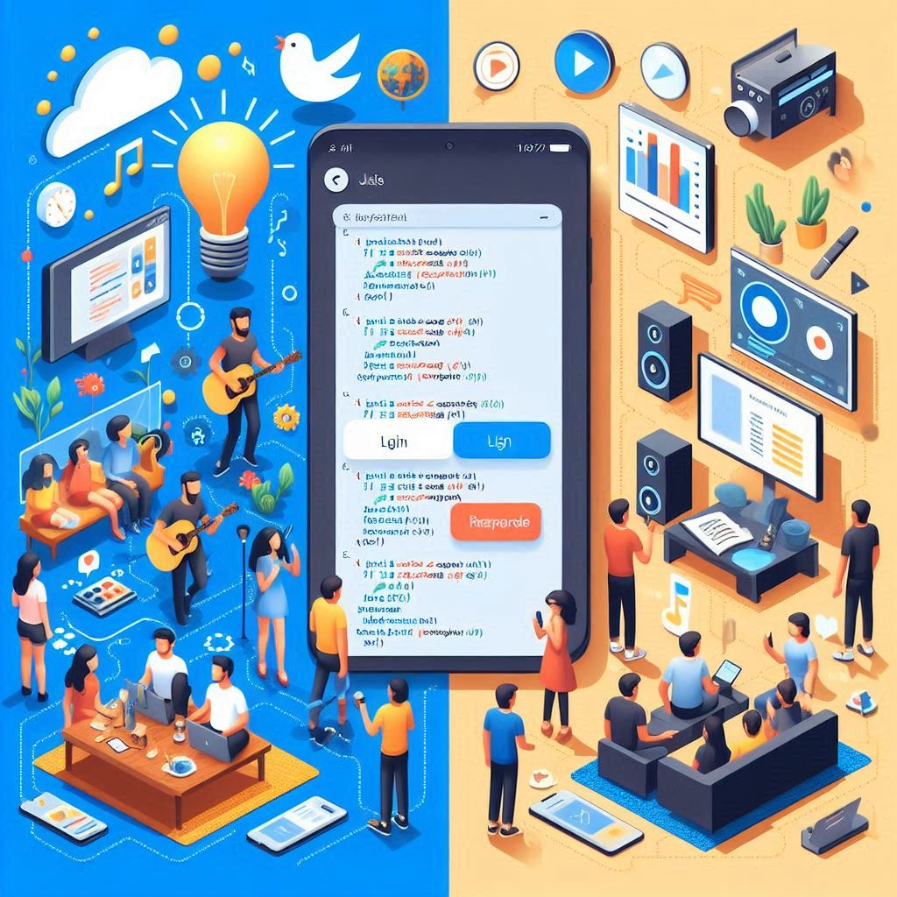
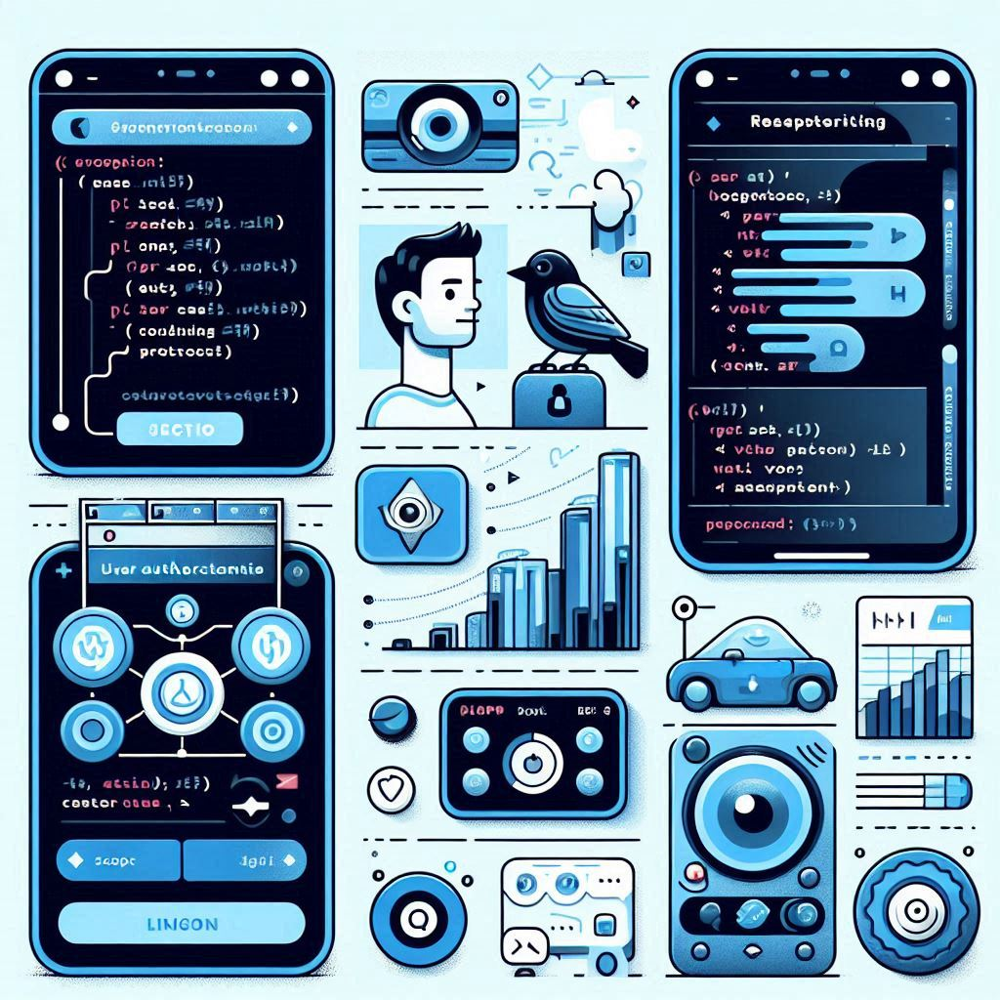

Table of Contents:
- Introduction
- Setting Up the Development Environment
- Integrating BlendVision APIs
- Building the User Interface
- Implementing Audio & Video Streaming
- Handling User Authentication
- Optimizing Performance
- FAQs
- Conclusion
1. Introduction
Remember the frustration of navigating clunky apps, enduring buffering nightmares, or struggling to find that perfect podcast? Building your own app lets you ditch those woes and create a haven tailored to your exact preferences. Think of it as your personal streaming playground – curate your favorite podcasts, audiobooks, and even music videos, all under one roof! Plus, the satisfaction of conquering a technical challenge and unleashing your inner app developer is an unparalleled thrill.
2. Let's Get Building: A Step-by-Step Odyssey (The How!)
Before diving into the code, ensure you have the necessary tools and frameworks set up. Here's what you'll need:
- Programming Language: JavaScript (React Native for cross-platform development)
- Backend: Node.js with Express
- Database: MongoDB
- APIs: BlendVision APIs
- Other Tools: Postman for API testing, Git for version control
Installing Required Tools
Start by installing Node.js and npm (Node Package Manager):
# For macOS: brew install node
# For Windows: choco install nodejsNext, set up a new React Native project:
npx react-native init PocketFMInstall necessary dependencies:
cd PocketFM
npm install axios react-navigation3. Unlocking BlendVision's Power
BlendVision API is the secret sauce that makes your app sing! Sign up for an account and obtain your API key. This key acts like a magical password, granting you access to BlendVision's powerful features, including video encoding and adaptive bitrate streaming (fancy terms for ensuring smooth, high-quality playback).
Steps:
- Sign up on the BlendVision developer portal.
- Obtain your API key and securely store it.
- Set up API client in your app.
4. Crafting the User Interface
This is where the magic happens! We'll build the user interface (UI) – the visual elements your users will interact with. Think of it as designing your dream home's layout. We'll create components like a HomeScreen showcasing your curated content list and a MediaPlayer to play your chosen audio or video.
5. Navigation Symphony
Now, let's ensure users can seamlessly navigate between your HomeScreen and MediaPlayer. We'll install React Navigation dependencies and configure navigation within your app. Imagine installing doors and hallways in your house, allowing users to move around effortlessly.
Steps:
- Install React Navigation dependencies.
- Configure navigation.
npm install @react-navigation/native @react-navigation/stack6. Backend Blitz
While the user interface is the front door, a robust backend is the heart of your app. We'll set up a Node.js server using Express.js to handle API requests, manage user data (if you plan to include login functionalities), and potentially store media information in MongoDB.
Steps:
- Set up a new Node.js project.
- Create a basic Express server.
7. Optimizing Performance
Time to unleash your creation to the world (or at least your phone)! We'll use commands to run your React Native app on either Android or iOS devices.
Steps:
- Run the app on Android.
- Run the app on iOS.
npx react-native run-androidnpx react-native run-ios8. Conclusion
Building a streaming app like PocketFM using BlendVision APIs is both exciting and rewarding. By following the steps outlined in this guide, you can create a robust, user-friendly app that offers a rich media experience. Remember to focus on optimizing performance and ensuring secure user authentication to provide the best possible experience for your users. BlendVision offers various support options, including documentation, community forums, and direct support for premium users.
 FAQs
Can I use BlendVision API for live streaming?
Yes, BlendVision supports live streaming. You'll need to set up a live stream configuration in your BlendVision account and use the provided endpoints to stream live content.
How does adaptive bitrate streaming work?
Adaptive bitrate streaming adjusts the quality of the video in real-time based on the viewer's internet connection. This ensures smooth playback without buffering, providing the best possible experience for the user.